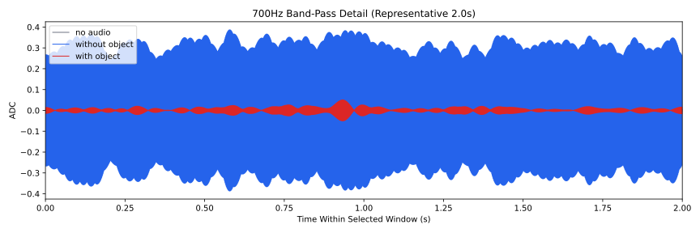
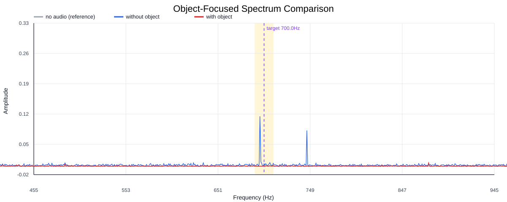
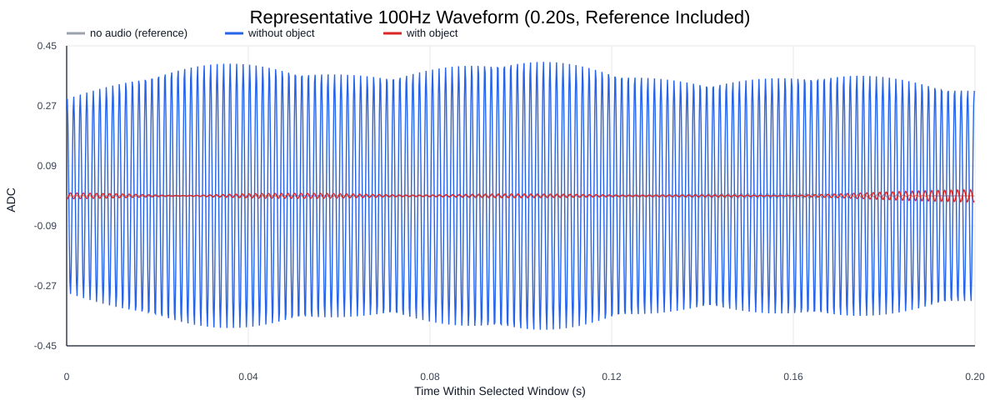
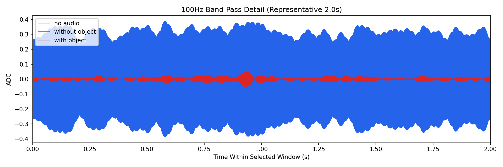
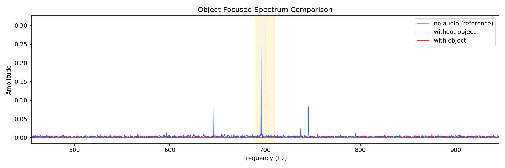
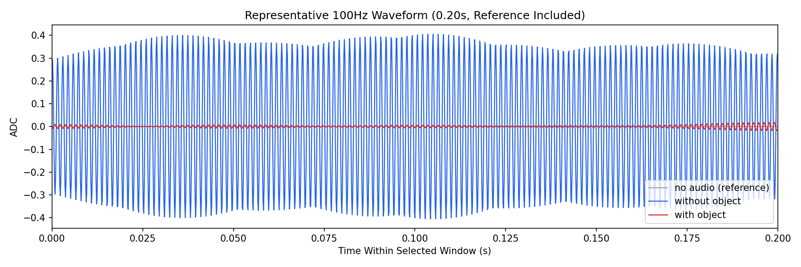

Background: F:\项目类文件夹\异物检测4.10\Data_Dual\frequency_sweep\0700Hz\repeat_04\raw\no_audio.csv
Without object: F:\项目类文件夹\异物检测4.10\Data_Dual\frequency_sweep\0700Hz\repeat_04\raw\without_object.csv
With object: F:\项目类文件夹\异物检测4.10\Data_Dual\frequency_sweep\0700Hz\repeat_04\raw\with_object.csv
| Metric | 无音频 | 100Hz无异物 | 100Hz有异物 | 无异物/无音频 | 有异物/无异物 | 有异物/无音频 |
|---|---|---|---|---|---|---|
| centered_rms | 0.031518 | 0.401517 | 0.112428 | 12.7395 | 0.2800 | 3.5672 |
| raw_target_amp | 0.000368 | 0.006507 | 0.001062 | 17.6605 | 0.1632 | 2.8817 |
| filtered_rms | 0.002530 | 0.232891 | 0.009440 | 92.0656 | 0.0405 | 3.7319 |
| filtered_target_amp | 0.000368 | 0.006507 | 0.001062 | 17.6605 | 0.1632 | 2.8817 |
| filtered_energy_ratio | 0.006442 | 0.336432 | 0.007051 | 52.2267 | 0.0210 | 1.0945 |
| window_filtered_target_amp_mean | 0.002300 | 0.319558 | 0.010610 | 138.9178 | 0.0332 | 4.6122 |
| window_filtered_target_amp_std | 0.002479 | 0.037710 | 0.006601 | 15.2106 | 0.1750 | 2.6625 |





